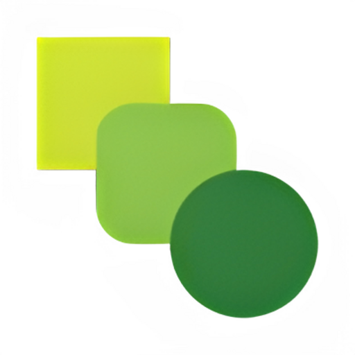

Pipelines
+
Draft
Published
↩ Undo
↪ Redo
⚡ Triggers
⏱ History
✦ Build
▶ Run
■ Stop
Publish
Generate ↵
✕
No steps yet
Use
✦ Build
to generate from a description, or
+ Add step
+
⊕
⊖
⊡
+ Add step
Code
✦ AI
↗ HTTP
File
› If
↺ Loop
🔔 Notify
Run Log
⎘
💾
✕
Run a pipeline to see output here
Settings
✕
AI Provider
OpenAI
Anthropic
Default Model
API Key
👁
Save Settings
Variables
Use
{{vars.KEY}}
in any step field to reference a variable.
Add
Color Theme